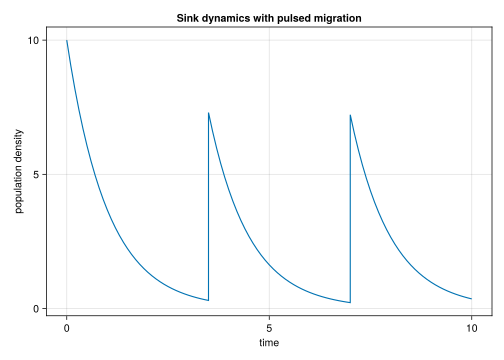
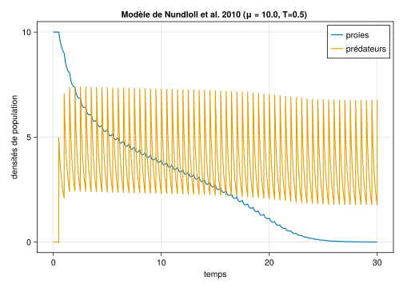
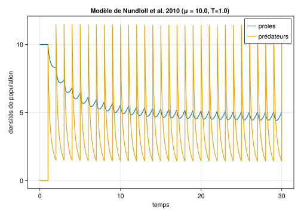

# paramètres
m = 1.0
μ = 2.0
param = [m, μ]
etat0 = 10.0
# time horizon
tmax = 10.0
tspan = (0.0, tmax)
tstep = 0.1Simuler un modèle semi-discret
Modèles semi-discrets
Les modèles semi-discrets (ou impulsionnels) ont des applications larges en sciences de la vie (Mailleret and Lemesle (2009)). Ils décrivent des variables à dynamiques continues la plupart du temps, perturbées par des évènements discrets à certains moments \tau_k:
\left\{\begin{array}{l} \dot x = f(x),\\ x(\tau_k^+) = g(\tau_k, x(\tau_k)). \end{array}\right.
Une manière classique de les simuler est de faire une boucle intégrant le système continu entre deux instants \tau_k, de combiner les résultats avec la partie discrète, et d’incrémenter.
DifferentialEquations.jl offre la possibilité de gérer ce type de simulation directement via le solver, sans boucle, par l’intermédiaire d’un DiscreteCallback.
Immigration et dynamique puits
Considérons une population de densité x suivant une dynamique de type puits (mortalité m), avec des immigrations régulières d’individus (tous les T unités de temps), à un taux d’immigration moyen \mu. On obtient le modèle suivant (e.g Mailleret and Grognard (2009)):
\left\{\begin{array}{l} \dot x = -m x,\\ x(kT^+) = x(kT) + \mu T,~\forall k \in\mathbb{N}^*. \end{array}\right.
On définit le système dynamique, la condition initiale, les paramètres:
Ainsi que les instants auxquels ont lieu les évènements discrets:
# inter-pulse period
T = 3.5
# timing of pulses, first pulse T time units after initial time
pulsetimes = Vector(tspan[1]+T:T:tspan[2])Le modèle pour sa partie continue:
# model (continuous dynamics)
function sink(u, param, t)
m = param[1]
x = u[1]
return dx = -m*x
endimplémentation des parties discrètes
On définit le problème d’intégration classiquement:
using DifferentialEquations
# define ODE
tosim = ODEProblem(
sink,
etat0,
tspan,
param,
saveat = tstep,
)Pour les parties discrètes, on définit la fonction discrète qui s’applique aux instants d’impulsion. Ici on modifie la composante état de l’intégrateur (integrator.u) en lui rajoutant \mu T (on utilise ici le \mu du namespace global, c’est mal ! mais voir Section 3 pour des choses propres):
# define pulse function
discrete!(integrator) = integrator.u += μ*TPuis le callback en lui-même; plusieurs solutions sont possibles (e.g. sur des conditions sur l’état, ou le temps), ici il s’agit d’un PresetTimeCallBack:
# define pulses as callbacks
callback = PresetTimeCallback(pulsetimes, discrete!)Et on intègre:
# integrate
sol = solve(tosim, Tsit5(), callback = callback)La représentation graphique montre la dynamique source-puits semi-discrete:
# plot
using CairoMakie
fig = Figure()
ax = Axis(
fig[1, 1],
xlabel = "time",
ylabel = "population density",
title = "Sink dynamics with pulsed migration",
)
lines!(
ax,
sol.t,
sol.u,
)
fig
Lutte biologique et densité dépendance
Le modèle
En second exemple, pour illustrer les dimensions supérieures, nous choisissons le modèle de lutte biologique par augmentation de Nundloll, Mailleret, and Grognard (2010), avec des prédateurs à dynamiques denisté dépendantes négatives (interfèrences de type squabbling).
Le modèle est construit sur la base d’un modèle proies (ravageurs) - prédateurs (ennemis naturels), les proies suivant une croissance logistique et la prédation étant décrite par une réponse de type Holling II. Le modèle s’écrit :
\left\{\begin{array}{l} \dot x = \displaystyle rx\left(1-\frac{x}{K}\right)-\frac{a x}{c + x} y,\\[.25cm] \dot y = \displaystyle \frac{\gamma a x}{c + x} - (m + q y) y,\\[.25cm] y(nT^+) = y(nT) + \mu T. \end{array}\right. avec :
- x la densité population de proies et y celle des prédateurs
- r et K les taux de croissance intrinsèque et la capacité de charge des proies
- a le taux d’attaque maximum, c la constante de demi-saturation et \gamma le facteur de conversion
- m et q les taux de mortalité et de squabbling
Définitions de struct
Pour faire les choses de manière plus structurée que dans l’exemple précédent, nous définissons différents struct:
ParamSquabpour les paramètres du modèle d’interactionsParamIntropour les paramètres liés aux introductions de prédateursParamTimepour ce qui concerne l’horizon temporel de simulation
# model parameters struct
@kwdef struct ParamSquab
r = 1.0
K = 10.0
a = 1.0
c = 2.0
γ = 1.0
m = 1.0
q = 0.5
end
# release parameters
@kwdef struct ParamIntro
μ = 10.0 # release rate
T = .5 # release period
end
# time horizon
@kwdef struct ParamTime
tmin = 0.0
tmax = 30.0
tspan = (tmin, tmax)
tstep = 0.1
endDéfinition du modèle
Nous définissons les fonctions de croissance et de prédation :
logistic()qui prend pour arguments la densité de proies et les paramètresholling2()qui prend pour arguments la densité de proies et les paramètres
# growth function
function logistic(x::Real, param::ParamSquab)
(; r, K) = param # unpack parameters
return r*x*(1 - x/K)
end
# response/predation function
function holling2(x::Real, param::ParamSquab)
(; a, c) = param
return a*x/(c + x)
endSur cette base, nous définissons le modèle d’interactions (dynamiques continues) modelsquab(), qui renvoie les dérivées de l’état en fonction des arguments:
- état (
u) - paramètres (
paramde typeParamSquab) - temps (
t)
# model (continuous dynamics)
function modelsquab(u, param::ParamSquab, t::Real)
(; γ, m, q) = param
x = u[1]
y = u[2]
dx = logistic(x, param) - holling2(x, param)*y
dy = γ*holling2(x, param)*y - (m+q*y)*y
return [dx, dy]
endfonction d’intégration numérique
Nous définissons la fonction simsquab() qui renvoie le résultat de la simulation, en fonction des arguments:
- condition initiale (
etat0) - paramètres du modèle continu (
parsquabde type `ParamSquab”) - paramètres liés à la partie d’introductions discrètes (
parintrode typeParIntro) - paramètres liés à l’horizon temporel de simulation (
partimede typeParamTime)
La fonction simsquab() définit les instants d’introduction (variable interne introtimes) depuis parintro et partime, et crée le callback correspondant pour intégrer les introductions discrètes dans les simulations.
using DifferentialEquations
function simsquab(etat0, parsquab::ParamSquab, parintro::ParamIntro, partime::ParamTime)
# unpack parameters
(; μ, T) = parintro
(; tspan, tstep) = partime
# define the ODE
tosimsquab = ODEProblem(
modelsquab,
etat0,
tspan,
parsquab,
saveat = tstep,
)
# timings of pulses, first pulse T times after initial time
introtimes = Vector(tspan[1]+T:T:tspan[2])
# define pulses for the integrator
intro!(integrator) = integrator.u[2] += μ*T
cbSquab = PresetTimeCallback(introtimes, intro!)
# solve the semi-discrete model
solsquab = solve(tosimsquab, Tsit5(), callback = cbSquab);
return solsquab
endreprésentation graphique
Finalement, nous exploitons la fonction simsquab() dans une fonction plotsquab() pour la représentation graphique. Elle renvoie la figure correspondante sur la base des mêmes arguments:
- condition initiale (
etat0) - paramètres du modèle continu (
parsquabde type `ParamSquab”) - paramètres liés à la partie d’introductions discrètes (
parintrode typeParIntro) - paramètres liés à l’horizon temporel de simulation (
partimede typeParamTime)
using CairoMakie
function plotsquab(etat0, parsquab::ParamSquab, parintro::ParamIntro, partime::ParamTime)
# unpack useful introduction parameters
(; μ, T) = parintro
# do the simulation
solsquab = simsquab(etat0, parsquab, parintro, partime)
# do the plot
figsquab = Figure()
ax = Axis(
figsquab[1,1],
xlabel = "temps",
ylabel = "densités de population",
title = "Modèle de Nundloll et al. 2010 (μ = $μ, T=$T) ",
)
lines!(
ax,
solsquab.t,
solsquab[1,:];
lw = 2,
label = "proies",
)
lines!(
ax,
solsquab.t,
solsquab[2,:];
lw = 2,
label = "prédateurs",
)
axislegend(ax; position = :rt)
return figsquab
endrésultats
Finalement, nous définissons des conditions initiales et construisons des paramètres sur la base des valeurs par défaut, pour générer la représentation graphique.
# initial condition
etat0 = [10.0, 0.0]
# construct parameters
parsquab = ParamSquab()
parintro = ParamIntro()
partime = ParamTime()
plotsquab(etat0, parsquab, parintro, partime)
Dans ces conditions d’introduction (\mu = 10 et T=0.5), l’éradication des proies est GAS.
Nundloll, Mailleret, and Grognard (2010) ont montré que la condition de stabilité de l’éradication est plus difficile à remplir lorsque pour un même taux d’introduction \mu, la période T est plus grande. C’est un résultat que nous illustrons ci-après pour le même taux d’introduction \mu = 10, et une période plus grande T=1.
# construct a new intro strategy with larger T than default (T = 0.5)
parintro2 = ParamIntro(T = 1.0)
# plot the simulation
plotsquab(etat0, parsquab, parintro2, partime)
Nota : pulses dépendant de l’état
Dans les exemple ci-dessus, les composantes discrètes (pulses) des modèles ne sont pas dépendantes de l’état (ou du temps). Si c’est le cas, il faudra modifier la fonction qui définit ce qu’il se passe au callback.
Ainsi pour un modèle avec prélèvements impulsionnels du type (E étant l’effort de prélèvement):
x(nT^+) = e^{-ET} x(nT)
On définira un callback ainsi:
# define times of pulses, first pulse T time units after initial time
prelevtimes = Vector(tspan[1]+T:T:tspan[2])
# define pulses for the integrator, assume x is the first coordinate
prelev!(integrator) = integrator.u[1] = exp(-E*T) integrator.u[1]
cbprelev = PresetTimeCallback(prelevtimes, prelev!)Le reste du code restant peu ou prou le même.
References
Mailleret, L., and F. Grognard. 2009. “Global Stability and Optimisation of a General Impulsive Biological Control Model.” Mathematical Biosciences 221 (2): 91–100.
Mailleret, L., and V. Lemesle. 2009. “A Note on Semi-Discrete Modelling in the Life Sciences.” Philosophical Transactions of the Royal Society A: Mathematical, Physical and Engineering Sciences 367 (1908): 4779–99.
Nundloll, Sapna, Ludovic Mailleret, and Frédéric Grognard. 2010. “Two Models of Interfering Predators in Impulsive Biological Control.” Journal of Biological Dynamics 4 (1): 102–14.